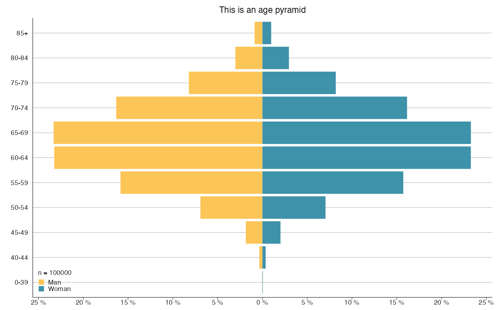
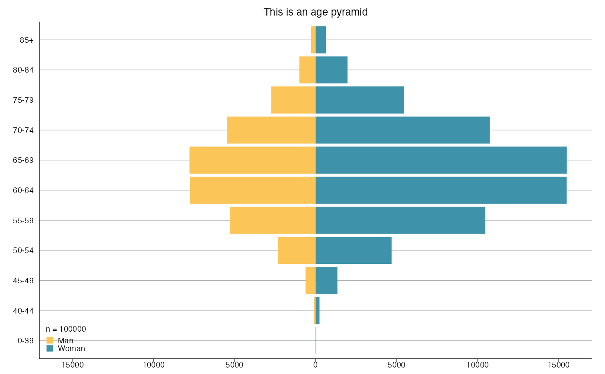

Plot an age pyramid using ggplot2.
age_pyramid(
df,
age_var = "Alder",
gender_var = "Kon",
man_level = "Man",
age_breaks = c(0, 39, 44, 49, 54, 59, 64, 69, 74, 79, 84, Inf),
age_labels = c("0-39", "40-44", "45-49", "50-54", "55-59", "60-64", "65-69", "70-74",
"75-79", "80-84", "85+"),
percent = TRUE,
x_breaks = 5,
x_breaks_end = x_breaks * 1e+05,
title = "",
subtitle = NULL,
y_lab = NULL,
x_lab = NULL,
fill_colors = slr_colors(2),
legend.position = c(0, 0),
legend_labels = ggplot2::waiver(),
label_breaks = ggplot2::waiver(),
legend_row = NULL,
legend_col = NULL,
...
)Data frame.
Name of age variable.
Name of gender variable.
Name of man level, probably "Man" or "Män".
Each age observation in an interval.
Label of the interval.
If TRUE, x-axis is in percent form.
Otherwise in count form.
Length between each break on x-axis.
Break end, default for 100,000. Works for all count values below that.
Plot title/subtitle, NULL for no title.
X/Y-axis labels, use NULL for no label.
Colors of the genders.
Position of the legend in plot,
if c(1,1), c(1,0) etc, legend inside plot.
Label for each legend key.
Order of the legend keys.
How many rows/columns for the legends.
arguments passed to theme_slr()
ggplot object containing age pyramid plot.
# Creating data
set.seed(123)
df <- data.frame(age = rpois(100000, 65),
gender = sample(c('Woman', 'Woman', 'Man'), 100000, replace = TRUE))
# Age pyramid
age_pyramid(df, age_var = 'age', gender_var = 'gender',
man_level = 'Man', title = "This is an age pyramid")

# Age pyramid with percent = FALSE
age_pyramid(df, age_var = 'age', gender_var = 'gender',
man_level = 'Man', percent = FALSE, x_breaks = 5000,
title = "This is an age pyramid")
